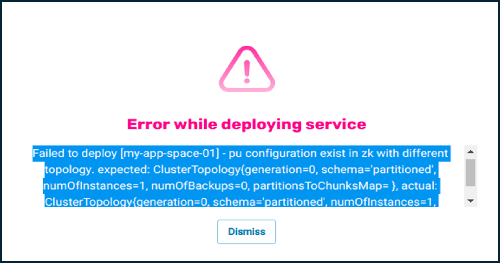
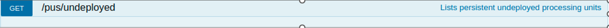
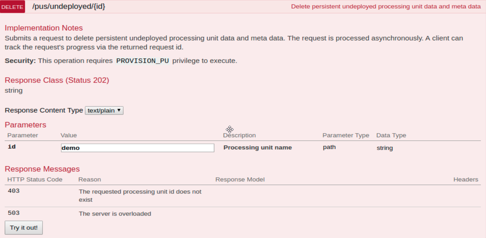
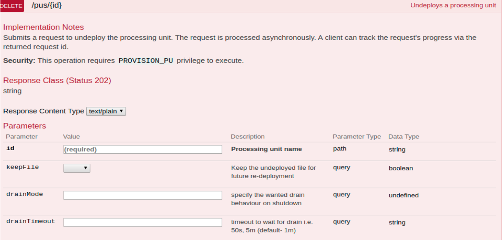

The initial loading of data into each tier can be a time-consuming process, starting with the System of Record or other external data sources. Additionally, data in both tiers can be updated during the normal course of operations during the day.
During the normal use of Tiered Storage, priority data is stored in the Hot tier, and other data is stored in the Warm tier.
Initial load from external data source will be performed as usual if the local Database (DB) is empty (empty = no metadata).
If the local DB is not empty, the data of the primary will be loaded from the local disk and backup will perform recovery from primary (delete disk data in init).
We use ZooKeeper (ZK) persistent to store the last primary of each partition and where each instance should be located, so election will be performed as before.
pu.autogenerated-instance-sla="true" to allow auto generation of sla per instance.
In the case of deploy/undeploy with a different number of partitions, an API needs to be called to clean the internal database and configuration, otherwise the initial load will fail.
Using data persistency, data in both tiers is stored in a system repository. When the data is undeployed, the user has an option to persist the data. Subsequent redeployment of the data is performed at optimum speed.
In the primary space log:
Recovery from tier layer
Data source recovery
Entries found in warm tier:
Entries inserted to hot tier:
Total Time:
This data can be compared with primary log of the initial run Recovery from external data source:
Entries found in data source
Entries inserted to space:
Entries ignored:
Total Time:
Transient objects are not kept in SQLite but can still be mirrored to an external source.
In this case, after undeploy+deploy, the transient objects will not be in the space.
If it is required to load from an external source, delete pu metadata & data.
In the case of deploying using a different topology:

The undeployed services can be viewed using the GET /pus/undeployed REST API.

An example of sample output is shown below.
[
{
"name": "space-10-SNAPSHOT",
"unDeployedAt": "2021-08-03T12:18:25.437",
"isPersistent": true,
"gracefulShutdown": true,
"lastPrimaries": [
{
"partitionId": 1,
"insatnceId": "1_1"
}
],
"spaceInstancesHosts": [
{
"instanceId": "1_0",
"host": "127.0.1.1"
},
{
"instanceId": "1_1",
"host": "127.0.1.1"
}
],
"schema": "partitioned",
"numOfInstances": 1,
"backupsPerPartition": 1
}

Added options to undeploy: DrainMode and DrainTimeout
NONE - make no attempt to wait for all data to be drained before shutting down
REQUIRED - make an attempt to wait for all data to be drained before shutting down,
shutdown even if drain wasn't completed before drainTimeout
ATTEMPT - make an attempt to wait for all data to be drained before shutting down,
shutdown will not occur if drain wasn't completed before drainTimeout
Admin API:
pu.undeployAsync(new UndeployOptions(DrainMode.ATTEMPT,60000L));
CLI:
./gs.sh service undeploy --drain-mode=ATTEMPT --drain-timeout=60000ms test.
If drain was not completed with mode attempt, the PU will be at quiesce status.
Even if undeploy did not drain all, data is considered as consistent and will recover from disk in the case where it is not empty. The same goes for failover with async replication.
The data of undeployed services can be deleted using the DELETE /pus/undeployed/{id} REST API.

| Supported | Not Supported |
|---|---|
|
|